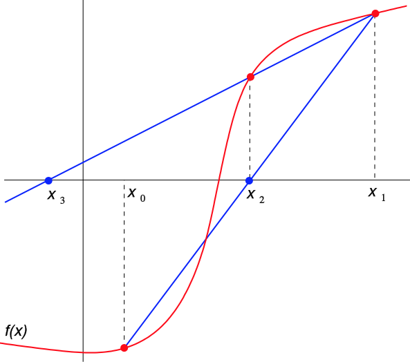

Be able to apply Newton’s Method to approximate a solution to \(f(x)=0\).
Be able to use different stopping procedures to exit the Newton’s Method algorithm, as described in the notes.
The following diagram shows \(f(x)=x^3-2x+4\) and the first 3 iterations of Newton’s Method when initialized with \(x_0=3\).
Start at \(x_0=3\) and do the following.
Find an equation of \(T_1\), the tangent line to the graph at \(x_0\)? Find the \(x\)-intercept of \(T_1\) and call this value \(x_1\).
\(T_1: y=25x-50\). \(x_1=2\)
Find an equation of \(T_2\), the tangent line to the graph at \(x_1\)? Find the \(x\)-intercept of \(T_2\) and call this value \(x_2\).
\(T_2: y=10x-12\). \(x_2=1.2\)
Find an equation of \(T_3\), the tangent line to the graph at \(x_2\)? Find the \(x\)-intercept of \(T_3\) and call this value \(x_3\).
\(T_3: y=\frac{58}{25}x-\frac{68}{125}\). \(x_3=-\frac{34}{145}\approx-.2344827586\)
After 3 iterations of Newton’s Method, what is a approximate solution to \(x^3-2x+4=0\)?
\(x_3=-\frac{34}{145}\approx-.2344827586\)
It turns out that the only real solution to \(x^3-2x+4=0\) is \(x=-2\). If you were to perform another iteration, would you move closer to or farther away from the actual solution? Explain.
1You would move further away. The tangent line to the graph of \(f(x)\) at \(x_3\) will intersect the positive \(x\)-axis.
It turns out that we would need 22 iterations of Newton’s Method to satisfy either of the following stopping criteria:
Let \(\epsilon=0.1\). If \(|f(x_k)|<\epsilon\), stop. Else, perform another iteration.
let \(\epsilon=0.1\). If \(|x_k-x_{k-1}|<\epsilon\), stop. Else, perform another iteration.
Perhaps initializing the algorithm with a different choice of \(x_0\) will perform better. Choose \(x_0=1\) and perform Newton’s Method until your resulting estimate is “reasonably close” to the actual solution of \(x=-2\). What is your approximation and how many iterations did you perform?
1
As you can see in the following diagram, it will only take one iteration of Newton’s Method to obtain the exact solution of \(x=2\). Notice that the initialization of the algorithm can have a big impact on the number of iterations. Also, if there were multiple solutions to the equation, the initial guess could determine which of the solutions is reached.
Use Newton’s Method to estimate a solution to \(x^3+7x-5=0\) using the stopping procedures listed below. Initialize the algorithm with \(x_0=3\). In each case, what is an estimate of the desired solution?
Stop after 3 iterations.
The solution is approximately 0.693829439.
Let \(\epsilon=0.1\). Use the stopping algorithm: “If \(|f(x_k)|<\epsilon\), stop. Else, perform another iteration."
The solution is approximately 0.671232257.
Again let \(\epsilon=0.1\). Use the stopping algorithm: “If \(|x_k-x_{k-1}|<\epsilon\), stop. Else, perform another iteration."
The solution is approximately 0.671232257.
Estimate \(\sqrt{3}\) using Newton’s Method. Initialize your search with \(x_0=1\) and use the stopping procedures listed below. In each case, what is the estimated value of \(\sqrt{3}\) and how many iterations were required? (Hint: find the positive value of \(x\) such that \(x^2=3\).)
Stop after 3 iterations.
The solution is approximately 1.732142857.
Let \(\epsilon=0.1\). Use the stopping algorithm: “If \(|f(x_k)|<\epsilon\), stop. Else, perform another iteration."
The solution is approximately 1.75 after 2 iterations.
Again let \(\epsilon=0.1\). Use the stopping algorithm: “If \(|x_k-x_{x-1}|<\epsilon\), stop. Else, perform another iteration."
The solution is approximately 1.732142857 after 3 iterations.
Newton’s Method will fail to when trying to solve \(x^{1/3}=0\).
Fill in the following table:
| \(k\) | \(x_k\) | \(|f(x_k)|\) | \(|x_k-x_{k-1}|\) |
|---|---|---|---|
| 0 | 1 | \(-\) | |
| 1 | |||
| 2 | |||
| 3 | |||
| 4 | |||
| 5 |
| \(k\) | \(x_k\) | \(|f(x_k)|\) | \(|x_k-x_{k-1}|\) |
|---|---|---|---|
| 0 | 1 | 1 | \(-\) |
| 1 | \(-2\) | \(1.25992105\) | 3 |
| 2 | 4 | \(1.587401052\) | 6 |
| 3 | \(-8\) | 2 | 12 |
| 4 | 16 | \(2.5198421\) | 24 |
| 5 | \(-32\) | \(3.174802104\) | 48 |
From one iteration to the next, what is happening to \(|f(x_k)|\)? What is an interpretation of this?
1From one iteration to the next \(|f(x_k)|\) gets larger. As a result, the \(y\)-values of \(y=x^{1/3}\) are getting farther away from 0 (which is the opposite of what we need).
From one iteration to the next, what is happening to \(|x_k-x_{k-1}|)\)? What is an interpretation of this?
1From one iteration to the next \(|x_k-x_{k-1}|\) gets larger. As a result, the approximations are getting farther apart (which is the opposite of what we need).
Sketch \(y=x^{1/3}\) and the results from the first 3 iterations of Newton’s Method.
The Secant Method is a modification of Newton’s Method in which an approximation of the derivative is used rather than the derivative itself. Consider the following diagram:

The algorithm starts by choosing \(x_0\) and \(x_1\) “close" to the actual solution to \(f(x)=0\). To get the next estimate, \(x_2\), one finds the \(x\)-intercept of the secant line through \((x_0,f(x_0)\) and \((x_1,f(x_1))\). If this estimate is sufficiently good, the algorithm terminates. Else, the process is repeated where \(x_3\) is the \(x\)-intercept of the secant line through \((x_1,f(x_1)\) and \((x_2,f(x_2))\). Determine the general update formula for \(x_{x+1}\) if you know \(x_k\) and \(x_{k-1}\).
Note: This method can sometimes be faster than Newton’s Method since we only have to compute the function value rather than both the function and derivative values. It is also similar to the False position method discussed in question 6 of the Bisection Method HW; but, unlike the False position method, in the secant method the solution need not remain bracketed by the endpoints \(x_{k-1}\) and \(x_k\). So, there can be convergence issues.
\(x_{k+1} = x_k - \frac{f(x_k)(x_k-x_{k-1})}{f(x_k)-f(x_{k-1})}\)